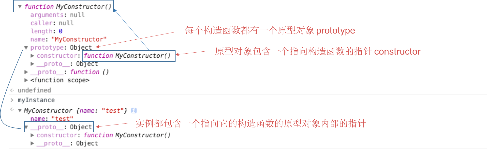
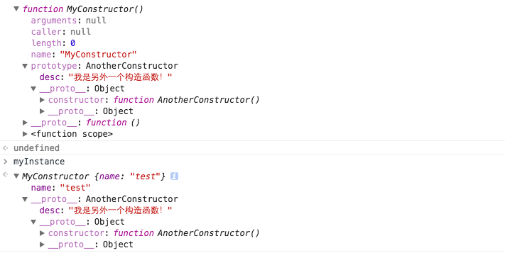
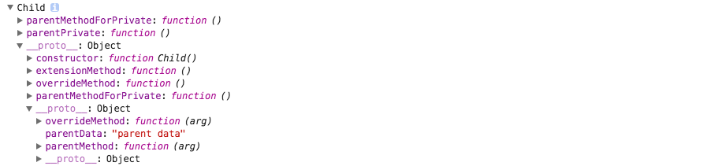

原型链
在 JS 中，原型链是实现继承的主要方法，它的基本思想就是让一个引用类型去继承另外一个引用类型的属性和方法。
构造函数、原型和实例之间的关系
我们先来看看以下代码。我们定义了一个构造函数（MyConstructor），并且用这个构造函数构造出一个实例（myInstance）。
|
接下来，我们在控制台输出这两个对象看一下：

它们之间的关系就如上图所示。那么，我们现在让这个关系更加复杂，我们把 MyConstructor.prototype 等于另外一个构造函数的实例，看看结果会怎么样？
|

它们的结构关系就变成了上图那样子。
instanceof 运算符
|
instanceof 运算符用来测试 object 在其原型链构造函数上是否具有 constructor
对象类型定义- Object Type
|
实例成员 - Instance Members
通过"new"关键字可以创建一个实例对象，而实例成员（变量或方法）能够通过这个实例对象来访问。
实例成员可以通过"this"关键字，原型（prototype），构造函数或Object.defineProperty来定义。
|
静态成员 - Static Members
在
C++中，静态成员是属于整个类的而不是某个对象，静态成员变量只存储一份供所有对象共用。所以在所有对象中都可以共享它。使用静态成员变量实现多个对象之间的数据共享不会破坏隐藏的原则，保证了安全性还可以节省内存。
类比上面 C++ 对于静态成员的定义，可以得出以下的总结：
在 JS 中，静态成员是属于整个构造函数而不是属于某个实例对象的，所有的实例对象都可以共享静态成员。
JavaScript中并不直接支持静态成员。- 可以通过
构造函数来创建静态成员。 - 静态成员不允许通过
"this"关键字直接访问。
公共静态成员
公共静态成员（函数&变量）在构造函数的外部可以使用。
|
私有静态成员
私有静态成员（函数&变量）只能在构造函数的内部使用。
|
抽象类型 - Abstract Types
Javascript是一门弱类型语言，声明一个变量的时候不需要指定它的类型。这就减弱了对于像接口这样的抽象类型的依赖。但有时候，你仍然希望使用抽象类型来将一些共有的功能放在一起，并采用继承的机制，让其他类型也具有相同的功能，你可以参考下面的示例：
|
接口 - Interfaces
JavaScript同样没有对接口的直接支持。你可以通过下面代码中实现的机制来定义接口。
|
单例对象 - Singleton Object
如果你希望在全局范围内只创建一个某一类型的示例，那么你可以有下面两种方式来实现一个单例。
|
|
创建对象 - Object Creation
通过 new 关键字创建
可以使用"new"关键字来创建内置类型或用户自定义类型的实例对象，它会先创建一个空的实例对象，然后再调用构造函数来给这个对象的成员变量赋值，从而实现对象的初始化。
通过字面量直接创建
通过字面量创建对象非常简单和直接，还可以创建嵌套对象。
成员作用域 - Scoping
私有字段 - Private Fields
在JavaScript中没有对私有字段的直接支持，可以通过构造函数来实现它。
- 首先将变量在
构造函数中定义为私有的 - 任何需要使用到这个私有字段的
方法都需要定义在构造函数中 - 这样就可以
通过这些共有方法来访问这个私有变量了。
|
私有方法 - Private Methods
私有方法也被称作内部函数，往往被定义在构造函数中，从外部无法直接访问它们。
|
如果私有内部函数被实例化并被构造函数返回，那么它将可以从外部被调用。
|
特权方法 - Privileged Methods
在构造函数中使用"this."声明的函数称为特权方法，它们能够访问私有字段，并且可以从外部调用。
公共字段 - Public Fields
公共字段的意思是，所有实例对象都会有这个字段，但是这个字段的值是每个实例对象都不共享的，当实例对象改变它的某一个字段的值时，并不会改变其他对象中该字段的值。
|
公共方法 - Public Methods
参见上面的公共字段。
|
继承 - Inheritance
“原型继承“——使用原型机制实现继承的方法，是最常用的。
|

模块化 - Modularization
当我们的项目中，自定义的对象类型越来越多时，我们需要更有效地组织和管理这些类定义，并控制他们的可见性，相互依赖关系以及加载顺序。
"命名空间"和"模块"能够帮助我们很好地解决这个问题。
命名空间 - Namespaces
JavaScript中并没有命名空间的概念。我们需要通过对象来创建命名空间，并将我们定义的对象类型放入其中。
|
模块 - Modules
模块被用来将我们的
JavaScript代码分解到包中。模块可以引用其他模块或将自己定义的对象类型对外暴露，以供其他模块使用。同时它能够用来管理模块间的依赖关系，并按照我们指定的顺序进行加载。目前有一些第三方库可以用来实现模块的管理。
|
下面的例子中，我们在模块里定义新的类型，并且引用其他模块并将自身的公共类型对外暴露。
自定义异常 - Custom Exceptions
JavaScript中有一些内部定义的异常，如Error、TypeError和SyntaxError。它们会在运行时被创建和抛出。所有的异常都是”unchecked“。一个普通的对象也可以被用作一个异常，并在throw语句中抛出。因此，我们可以创建自己定义的异常对象，并且在程序中捕获它们进行处理。
一个异常处理的最佳实践是，扩展JavaScript中标准的Error对象。
下面，我们利用 原型继承，扩展两个自定义异常。
|
使用自定义异常
|